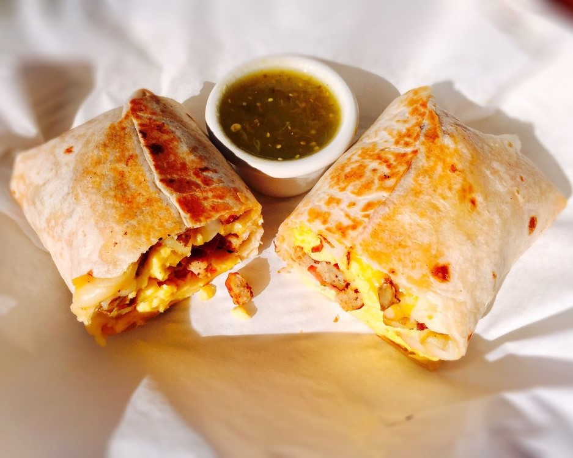

Popular Dishes
Check out the sweet and savory dishes that customers love the most!

Breakfast Wrap
Eggs, Bacon or Sausage, potatoes, cheese, pico de gallo wrapped in a hand made tortilla.
$8.99

Breakfast Bowl
Bacon or Sausage, spinach, potatoes, cheese, scrambled eggs, pico de gallo.
$10.75
Brioche French Toast
Fresh Baked Brioche Bread, topped with fresh fruit and served with real Maple or Boysenberry syrup.
$10.95